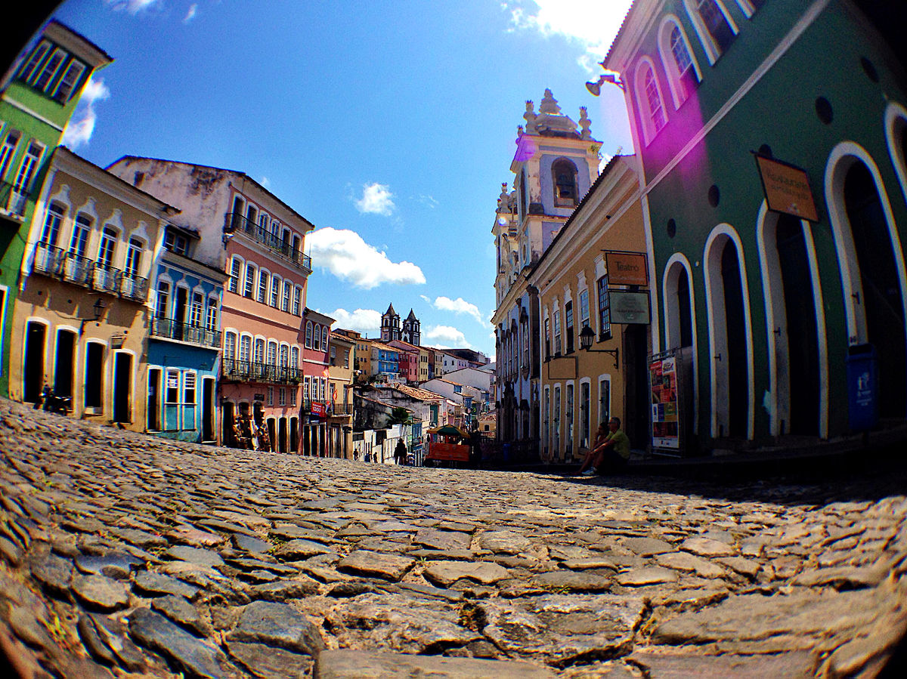

Sobre:
O Pelourinho, popularmente chamado de Pelô, é um bairro da cidade de Salvador, no Brasil. Localiza-se no Centro Histórico da cidade, na área que abrange apenas as ruas que vão do Terreiro de Jesus até o Largo do Pelourinho, o qual possui um conjunto arquitetônico colonial barroco brasileiro preservado e integrante do Patrimônio Histórico da Organização das Nações Unidas para a Educação, a Ciência e a Cultura.
